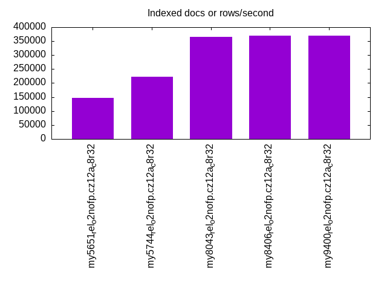

This is a report for the insert benchmark with 30M docs and 1 client(s). It is generated by scripts (bash, awk, sed) and Tufte might not be impressed. An overview of the insert benchmark is here and a short update is here. Below, by DBMS, I mean DBMS+version.config. An example is my8020.c10b40 where my means MySQL, 8020 is version 8.0.20 and c10b40 is the name for the configuration file.
The test server has 8 AMD cores, 32G RAM and an NVMe SSD. It is described here as the PN53. The benchmark was run with 1 client and there were 1 or 3 connections per client (1 for queries or inserts without rate limits, 1+1 for rate limited inserts+deletes). It uses 1 table. It loads 30M rows per table without secondary indexes, creates 3 secondary indexes per table, then inserts 40m+10m rows per table with a delete per insert to avoid growing the table. It then does 6 read+write tests for 1800s each that do queries as fast as possible with 100,100,500,500,1000,1000 inserts/s and the same for deletes/s per client concurrent with the queries. The database is cached by InnoDB. Clients and the DBMS share one server. The per-database configs are in the per-database subdirectories here.
The tested DBMS are:
The numbers are inserts/s for l.i0, l.i1 and l.i2, indexed docs (or rows) /s for l.x and queries/s for qr100, qp100 thru qr1000, qp1000" The values are the average rate over the entire test for inserts (IPS) and queries (QPS). The range of values for IPS and QPS is split into 3 parts: bottom 25%, middle 50%, top 25%. Values in the bottom 25% have a red background, values in the top 25% have a green background and values in the middle have no color. A gray background is used for values that can be ignored because the DBMS did not sustain the target insert rate. Red backgrounds are not used when the minimum value is within 80% of the max value.
| dbms | l.i0 | l.x | l.i1 | l.i2 | qr100 | qp100 | qr500 | qp500 | qr1000 | qp1000 |
|---|---|---|---|---|---|---|---|---|---|---|
| my5651_rel_o2nofp.cz12a_c8r32 | 184049 | 146342 | 33501 | 23364 | 13180 | 11184 | 13204 | 11112 | 13091 | 11167 |
| my5744_rel_o2nofp.cz12a_c8r32 | 163934 | 222223 | 38095 | 25189 | 10986 | 9415 | 10926 | 9387 | 10958 | 9351 |
| my8043_rel_o2nofp.cz12a_c8r32 | 110701 | 365855 | 34692 | 20121 | 9144 | 6952 | 9124 | 6980 | 9122 | 6942 |
| my8406_rel_o2nofp.cz12a_c8r32 | 110701 | 370372 | 34512 | 20040 | 8906 | 6806 | 8908 | 6789 | 8873 | 6824 |
| my9400_rel_o2nofp.cz12a_c8r32 | 109890 | 370372 | 34632 | 20325 | 9185 | 6992 | 9178 | 6973 | 9131 | 6975 |
This table has relative throughput, throughput for the DBMS relative to the DBMS in the first line, using the absolute throughput from the previous table. Values less than 0.95 have a yellow background. Values greater than 1.05 have a blue background.
| dbms | l.i0 | l.x | l.i1 | l.i2 | qr100 | qp100 | qr500 | qp500 | qr1000 | qp1000 |
|---|---|---|---|---|---|---|---|---|---|---|
| my5651_rel_o2nofp.cz12a_c8r32 | 1.00 | 1.00 | 1.00 | 1.00 | 1.00 | 1.00 | 1.00 | 1.00 | 1.00 | 1.00 |
| my5744_rel_o2nofp.cz12a_c8r32 | 0.89 | 1.52 | 1.14 | 1.08 | 0.83 | 0.84 | 0.83 | 0.84 | 0.84 | 0.84 |
| my8043_rel_o2nofp.cz12a_c8r32 | 0.60 | 2.50 | 1.04 | 0.86 | 0.69 | 0.62 | 0.69 | 0.63 | 0.70 | 0.62 |
| my8406_rel_o2nofp.cz12a_c8r32 | 0.60 | 2.53 | 1.03 | 0.86 | 0.68 | 0.61 | 0.67 | 0.61 | 0.68 | 0.61 |
| my9400_rel_o2nofp.cz12a_c8r32 | 0.60 | 2.53 | 1.03 | 0.87 | 0.70 | 0.63 | 0.70 | 0.63 | 0.70 | 0.62 |
This lists the average rate of inserts/s for the tests that do inserts concurrent with queries. For such tests the query rate is listed in the table above. The read+write tests are setup so that the insert rate should match the target rate every second. Cells that are not at least 95% of the target have a red background to indicate a failure to satisfy the target.
| dbms | qr100.L1 | qp100.L2 | qr500.L3 | qp500.L4 | qr1000.L5 | qp1000.L6 |
|---|---|---|---|---|---|---|
| my5651_rel_o2nofp.cz12a_c8r32 | 100 | 100 | 500 | 500 | 1000 | 1000 |
| my5744_rel_o2nofp.cz12a_c8r32 | 100 | 100 | 500 | 500 | 1000 | 1000 |
| my8043_rel_o2nofp.cz12a_c8r32 | 100 | 100 | 500 | 500 | 1000 | 1000 |
| my8406_rel_o2nofp.cz12a_c8r32 | 100 | 100 | 500 | 500 | 1000 | 999 |
| my9400_rel_o2nofp.cz12a_c8r32 | 100 | 100 | 500 | 500 | 1000 | 999 |
| target | 100 | 100 | 500 | 500 | 1000 | 1000 |
l.i0: load without secondary indexes. Graphs for performance per 1-second interval are here.
Average throughput:
Insert response time histogram: each cell has the percentage of responses that take <= the time in the header and max is the max response time in seconds. For the max column values in the top 25% of the range have a red background and in the bottom 25% of the range have a green background. The red background is not used when the min value is within 80% of the max value.
| dbms | 256us | 1ms | 4ms | 16ms | 64ms | 256ms | 1s | 4s | 16s | gt | max |
|---|---|---|---|---|---|---|---|---|---|---|---|
| my5651_rel_o2nofp.cz12a_c8r32 | 99.725 | 0.219 | 0.034 | 0.021 | 0.002 | 0.175 | |||||
| my5744_rel_o2nofp.cz12a_c8r32 | 99.702 | 0.109 | 0.061 | 0.127 | 0.001 | 0.165 | |||||
| my8043_rel_o2nofp.cz12a_c8r32 | 99.473 | 0.335 | 0.058 | 0.132 | 0.002 | 0.078 | |||||
| my8406_rel_o2nofp.cz12a_c8r32 | 99.470 | 0.337 | 0.060 | 0.131 | 0.002 | 0.093 | |||||
| my9400_rel_o2nofp.cz12a_c8r32 | 99.452 | 0.355 | 0.060 | 0.131 | 0.002 | 0.078 |
Performance metrics for the DBMS listed above. Some are normalized by throughput, others are not. Legend for results is here.
ips qps rps rmbps wps wmbps rpq rkbpq wpi wkbpi csps cpups cspq cpupq dbgb1 dbgb2 rss maxop p50 p99 tag 184049 0 1617 6.3 495.6 45.9 0.009 0.035 0.003 0.255 24185 20.3 0.131 9 2.0 32.5 3.5 0.175 185670 153878 my5651_rel_o2nofp.cz12a_c8r32 163934 0 0 0.0 503.2 42.4 0.000 0.000 0.003 0.265 19031 20.0 0.116 10 2.0 32.5 4.0 0.165 165267 137281 my5744_rel_o2nofp.cz12a_c8r32 110701 0 0 0.0 411.0 31.6 0.000 0.000 0.004 0.293 13713 17.1 0.124 12 2.0 32.6 4.3 0.078 111588 102981 my8043_rel_o2nofp.cz12a_c8r32 110701 0 0 0.0 406.0 31.4 0.000 0.000 0.004 0.291 13677 17.1 0.124 12 2.0 34.0 4.2 0.093 111079 101788 my8406_rel_o2nofp.cz12a_c8r32 109890 0 0 0.0 406.3 31.4 0.000 0.000 0.004 0.293 13688 17.2 0.125 13 2.0 34.0 4.3 0.078 110880 102081 my9400_rel_o2nofp.cz12a_c8r32
l.x: create secondary indexes.
Average throughput:
Performance metrics for the DBMS listed above. Some are normalized by throughput, others are not. Legend for results is here.
ips qps rps rmbps wps wmbps rpq rkbpq wpi wkbpi csps cpups cspq cpupq dbgb1 dbgb2 rss maxop p50 p99 tag 146342 0 27 0.1 2290.6 159.2 0.000 0.001 0.016 1.114 1579 10.4 0.011 6 4.2 34.7 5.2 0.001 NA NA my5651_rel_o2nofp.cz12a_c8r32 222223 0 0 0.0 3992.0 227.2 0.000 0.000 0.018 1.047 12129 11.9 0.055 4 4.6 35.1 5.5 0.001 NA NA my5744_rel_o2nofp.cz12a_c8r32 365855 0 1 0.0 11127.0 466.0 0.000 0.000 0.030 1.304 24775 40.1 0.068 9 4.5 35.1 5.0 0.002 NA NA my8043_rel_o2nofp.cz12a_c8r32 370372 0 1 0.0 11793.1 478.0 0.000 0.000 0.032 1.321 26220 39.7 0.071 9 4.5 36.5 5.1 0.002 NA NA my8406_rel_o2nofp.cz12a_c8r32 370372 0 1 0.0 11722.1 476.8 0.000 0.000 0.032 1.318 25827 39.7 0.070 9 4.5 36.5 5.1 0.001 NA NA my9400_rel_o2nofp.cz12a_c8r32
l.i1: continue load after secondary indexes created with 50 inserts per transaction. Graphs for performance per 1-second interval are here.
Average throughput:
Insert response time histogram: each cell has the percentage of responses that take <= the time in the header and max is the max response time in seconds. For the max column values in the top 25% of the range have a red background and in the bottom 25% of the range have a green background. The red background is not used when the min value is within 80% of the max value.
| dbms | 256us | 1ms | 4ms | 16ms | 64ms | 256ms | 1s | 4s | 16s | gt | max |
|---|---|---|---|---|---|---|---|---|---|---|---|
| my5651_rel_o2nofp.cz12a_c8r32 | 11.502 | 86.599 | 1.727 | 0.170 | 0.002 | 0.081 | |||||
| my5744_rel_o2nofp.cz12a_c8r32 | 13.398 | 86.007 | 0.553 | 0.040 | 0.001 | 0.121 | |||||
| my8043_rel_o2nofp.cz12a_c8r32 | 99.365 | 0.551 | 0.082 | 0.001 | nonzero | 0.324 | |||||
| my8406_rel_o2nofp.cz12a_c8r32 | 99.369 | 0.549 | 0.082 | 0.001 | nonzero | 0.349 | |||||
| my9400_rel_o2nofp.cz12a_c8r32 | 99.347 | 0.568 | 0.083 | 0.001 | nonzero | 0.340 |
Delete response time histogram: each cell has the percentage of responses that take <= the time in the header and max is the max response time in seconds. For the max column values in the top 25% of the range have a red background and in the bottom 25% of the range have a green background. The red background is not used when the min value is within 80% of the max value.
| dbms | 256us | 1ms | 4ms | 16ms | 64ms | 256ms | 1s | 4s | 16s | gt | max |
|---|---|---|---|---|---|---|---|---|---|---|---|
| my5651_rel_o2nofp.cz12a_c8r32 | 78.046 | 20.853 | 0.968 | 0.132 | 0.001 | 0.075 | |||||
| my5744_rel_o2nofp.cz12a_c8r32 | 67.449 | 32.380 | 0.157 | 0.012 | 0.001 | 0.121 | |||||
| my8043_rel_o2nofp.cz12a_c8r32 | 82.946 | 16.871 | 0.165 | 0.018 | 0.001 | nonzero | 0.342 | ||||
| my8406_rel_o2nofp.cz12a_c8r32 | 81.792 | 18.040 | 0.150 | 0.017 | nonzero | nonzero | 0.307 | ||||
| my9400_rel_o2nofp.cz12a_c8r32 | 85.148 | 14.665 | 0.168 | 0.019 | 0.001 | 0.113 |
Performance metrics for the DBMS listed above. Some are normalized by throughput, others are not. Legend for results is here.
ips qps rps rmbps wps wmbps rpq rkbpq wpi wkbpi csps cpups cspq cpupq dbgb1 dbgb2 rss maxop p50 p99 tag 33501 0 854 3.3 2497.8 108.9 0.026 0.102 0.075 3.328 34445 40.1 1.028 96 6.2 36.7 7.8 0.081 35545 9249 my5651_rel_o2nofp.cz12a_c8r32 38095 0 0 0.0 2892.9 125.6 0.000 0.000 0.076 3.377 24210 47.1 0.636 99 6.2 36.8 8.2 0.121 39695 10448 my5744_rel_o2nofp.cz12a_c8r32 34692 0 126 2.0 2790.0 115.9 0.004 0.058 0.080 3.420 43716 36.2 1.260 83 6.8 37.8 9.4 0.324 35896 5599 my8043_rel_o2nofp.cz12a_c8r32 34512 0 126 2.0 2673.7 112.8 0.004 0.058 0.077 3.348 43268 35.9 1.254 83 6.8 43.1 9.4 0.349 35846 5649 my8406_rel_o2nofp.cz12a_c8r32 34632 0 126 2.0 2750.7 114.9 0.004 0.058 0.079 3.396 43468 35.8 1.255 83 6.8 43.1 9.4 0.340 35846 5649 my9400_rel_o2nofp.cz12a_c8r32
l.i2: continue load after secondary indexes created with 5 inserts per transaction. Graphs for performance per 1-second interval are here.
Average throughput:
Insert response time histogram: each cell has the percentage of responses that take <= the time in the header and max is the max response time in seconds. For the max column values in the top 25% of the range have a red background and in the bottom 25% of the range have a green background. The red background is not used when the min value is within 80% of the max value.
| dbms | 256us | 1ms | 4ms | 16ms | 64ms | 256ms | 1s | 4s | 16s | gt | max |
|---|---|---|---|---|---|---|---|---|---|---|---|
| my5651_rel_o2nofp.cz12a_c8r32 | 88.938 | 10.938 | 0.017 | 0.097 | 0.009 | nonzero | 0.074 | ||||
| my5744_rel_o2nofp.cz12a_c8r32 | 93.362 | 6.581 | 0.045 | 0.011 | nonzero | nonzero | 0.114 | ||||
| my8043_rel_o2nofp.cz12a_c8r32 | 81.662 | 18.307 | 0.023 | 0.007 | 0.001 | nonzero | 0.101 | ||||
| my8406_rel_o2nofp.cz12a_c8r32 | 81.475 | 18.495 | 0.023 | 0.006 | 0.001 | nonzero | 0.101 | ||||
| my9400_rel_o2nofp.cz12a_c8r32 | 81.883 | 18.087 | 0.022 | 0.008 | 0.001 | nonzero | 0.117 |
Delete response time histogram: each cell has the percentage of responses that take <= the time in the header and max is the max response time in seconds. For the max column values in the top 25% of the range have a red background and in the bottom 25% of the range have a green background. The red background is not used when the min value is within 80% of the max value.
| dbms | 256us | 1ms | 4ms | 16ms | 64ms | 256ms | 1s | 4s | 16s | gt | max |
|---|---|---|---|---|---|---|---|---|---|---|---|
| my5651_rel_o2nofp.cz12a_c8r32 | 97.298 | 2.578 | 0.017 | 0.098 | 0.008 | nonzero | 0.074 | ||||
| my5744_rel_o2nofp.cz12a_c8r32 | 94.273 | 5.701 | 0.018 | 0.009 | nonzero | nonzero | 0.114 | ||||
| my8043_rel_o2nofp.cz12a_c8r32 | 95.401 | 4.573 | 0.018 | 0.006 | 0.001 | nonzero | 0.102 | ||||
| my8406_rel_o2nofp.cz12a_c8r32 | 94.857 | 5.119 | 0.017 | 0.006 | 0.001 | nonzero | 0.101 | ||||
| my9400_rel_o2nofp.cz12a_c8r32 | 95.693 | 4.282 | 0.018 | 0.007 | nonzero | nonzero | 0.119 |
Performance metrics for the DBMS listed above. Some are normalized by throughput, others are not. Legend for results is here.
ips qps rps rmbps wps wmbps rpq rkbpq wpi wkbpi csps cpups cspq cpupq dbgb1 dbgb2 rss maxop p50 p99 tag 23364 0 4148 16.2 1680.6 69.3 0.178 0.710 0.072 3.036 202942 43.7 8.686 150 6.2 36.7 7.8 0.074 23428 22108 my5651_rel_o2nofp.cz12a_c8r32 25189 0 0 0.0 1889.8 78.0 0.000 0.000 0.075 3.169 113442 41.9 4.504 133 6.2 36.8 8.3 0.114 25327 22698 my5744_rel_o2nofp.cz12a_c8r32 20121 0 0 0.0 1664.6 67.2 0.000 0.000 0.083 3.418 105937 34.5 5.265 137 6.8 37.8 9.4 0.101 20222 18813 my8043_rel_o2nofp.cz12a_c8r32 20040 0 0 0.0 1603.2 65.4 0.000 0.000 0.080 3.343 105007 34.5 5.240 138 6.8 45.0 9.4 0.101 20108 18882 my8406_rel_o2nofp.cz12a_c8r32 20325 0 0 0.0 1681.3 67.9 0.000 0.000 0.083 3.420 106731 34.7 5.251 137 6.8 45.0 9.4 0.117 20388 18623 my9400_rel_o2nofp.cz12a_c8r32
qr100.L1: range queries with 100 insert/s per client. Graphs for performance per 1-second interval are here.
Average throughput:
Query response time histogram: each cell has the percentage of responses that take <= the time in the header and max is the max response time in seconds. For max values in the top 25% of the range have a red background and in the bottom 25% of the range have a green background. The red background is not used when the min value is within 80% of the max value.
| dbms | 256us | 1ms | 4ms | 16ms | 64ms | 256ms | 1s | 4s | 16s | gt | max |
|---|---|---|---|---|---|---|---|---|---|---|---|
| my5651_rel_o2nofp.cz12a_c8r32 | 99.963 | 0.031 | 0.002 | 0.005 | nonzero | 0.024 | |||||
| my5744_rel_o2nofp.cz12a_c8r32 | 99.986 | 0.013 | nonzero | nonzero | 0.010 | ||||||
| my8043_rel_o2nofp.cz12a_c8r32 | 99.968 | 0.032 | nonzero | nonzero | 0.004 | ||||||
| my8406_rel_o2nofp.cz12a_c8r32 | 99.968 | 0.032 | nonzero | 0.001 | |||||||
| my9400_rel_o2nofp.cz12a_c8r32 | 99.966 | 0.034 | nonzero | nonzero | 0.008 |
Insert response time histogram: each cell has the percentage of responses that take <= the time in the header and max is the max response time in seconds. For max values in the top 25% of the range have a red background and in the bottom 25% of the range have a green background. The red background is not used when the min value is within 80% of the max value.
| dbms | 256us | 1ms | 4ms | 16ms | 64ms | 256ms | 1s | 4s | 16s | gt | max |
|---|---|---|---|---|---|---|---|---|---|---|---|
| my5651_rel_o2nofp.cz12a_c8r32 | 0.333 | 49.583 | 44.611 | 5.444 | 0.028 | 0.070 | |||||
| my5744_rel_o2nofp.cz12a_c8r32 | 4.306 | 95.611 | 0.083 | 0.010 | |||||||
| my8043_rel_o2nofp.cz12a_c8r32 | 91.111 | 8.889 | 0.011 | ||||||||
| my8406_rel_o2nofp.cz12a_c8r32 | 91.972 | 8.000 | 0.028 | 0.050 | |||||||
| my9400_rel_o2nofp.cz12a_c8r32 | 80.250 | 19.500 | 0.250 | 0.058 |
Delete response time histogram: each cell has the percentage of responses that take <= the time in the header and max is the max response time in seconds. For max values in the top 25% of the range have a red background and in the bottom 25% of the range have a green background. The red background is not used when the min value is within 80% of the max value.
| dbms | 256us | 1ms | 4ms | 16ms | 64ms | 256ms | 1s | 4s | 16s | gt | max |
|---|---|---|---|---|---|---|---|---|---|---|---|
| my5651_rel_o2nofp.cz12a_c8r32 | 3.194 | 45.972 | 47.861 | 2.972 | 0.064 | ||||||
| my5744_rel_o2nofp.cz12a_c8r32 | 56.194 | 43.750 | 0.056 | 0.010 | |||||||
| my8043_rel_o2nofp.cz12a_c8r32 | 32.111 | 59.222 | 8.667 | 0.011 | |||||||
| my8406_rel_o2nofp.cz12a_c8r32 | 33.944 | 58.139 | 7.889 | 0.028 | 0.056 | ||||||
| my9400_rel_o2nofp.cz12a_c8r32 | 33.500 | 46.722 | 19.694 | 0.083 | 0.050 |
Performance metrics for the DBMS listed above. Some are normalized by throughput, others are not. Legend for results is here.
ips qps rps rmbps wps wmbps rpq rkbpq wpi wkbpi csps cpups cspq cpupq dbgb1 dbgb2 rss maxop p50 p99 tag 100 13180 4 0.0 736.4 20.3 0.000 0.001 7.371 207.710 75694 12.4 5.743 75 6.2 36.7 7.9 0.024 13198 12814 my5651_rel_o2nofp.cz12a_c8r32 100 10986 0 0.0 184.0 5.0 0.000 0.000 1.840 51.606 63071 13.2 5.741 96 6.2 36.8 8.3 0.010 10990 10846 my5744_rel_o2nofp.cz12a_c8r32 100 9144 0 0.0 173.1 4.8 0.000 0.000 1.732 49.011 52870 12.4 5.782 108 6.8 37.8 9.5 0.004 9151 9070 my8043_rel_o2nofp.cz12a_c8r32 100 8906 0 0.0 155.1 4.3 0.000 0.000 1.553 43.987 51512 13.2 5.784 119 6.8 45.0 9.4 0.001 8911 8798 my8406_rel_o2nofp.cz12a_c8r32 100 9185 0 0.0 195.2 5.4 0.000 0.000 1.952 55.221 53124 12.4 5.784 108 6.8 45.0 9.5 0.008 9183 9071 my9400_rel_o2nofp.cz12a_c8r32
qp100.L2: point queries with 100 insert/s per client. Graphs for performance per 1-second interval are here.
Average throughput:
Query response time histogram: each cell has the percentage of responses that take <= the time in the header and max is the max response time in seconds. For max values in the top 25% of the range have a red background and in the bottom 25% of the range have a green background. The red background is not used when the min value is within 80% of the max value.
| dbms | 256us | 1ms | 4ms | 16ms | 64ms | 256ms | 1s | 4s | 16s | gt | max |
|---|---|---|---|---|---|---|---|---|---|---|---|
| my5651_rel_o2nofp.cz12a_c8r32 | 99.961 | 0.034 | 0.002 | 0.004 | nonzero | 0.020 | |||||
| my5744_rel_o2nofp.cz12a_c8r32 | 99.983 | 0.017 | nonzero | 0.002 | |||||||
| my8043_rel_o2nofp.cz12a_c8r32 | 99.915 | 0.085 | nonzero | 0.001 | |||||||
| my8406_rel_o2nofp.cz12a_c8r32 | 99.904 | 0.096 | nonzero | 0.001 | |||||||
| my9400_rel_o2nofp.cz12a_c8r32 | 99.906 | 0.094 | nonzero | 0.001 |
Insert response time histogram: each cell has the percentage of responses that take <= the time in the header and max is the max response time in seconds. For max values in the top 25% of the range have a red background and in the bottom 25% of the range have a green background. The red background is not used when the min value is within 80% of the max value.
| dbms | 256us | 1ms | 4ms | 16ms | 64ms | 256ms | 1s | 4s | 16s | gt | max |
|---|---|---|---|---|---|---|---|---|---|---|---|
| my5651_rel_o2nofp.cz12a_c8r32 | 0.056 | 51.917 | 44.361 | 3.667 | 0.061 | ||||||
| my5744_rel_o2nofp.cz12a_c8r32 | 100.000 | 0.002 | |||||||||
| my8043_rel_o2nofp.cz12a_c8r32 | 90.500 | 9.500 | 0.011 | ||||||||
| my8406_rel_o2nofp.cz12a_c8r32 | 91.333 | 8.667 | 0.011 | ||||||||
| my9400_rel_o2nofp.cz12a_c8r32 | 91.444 | 8.528 | 0.028 | 0.022 |
Delete response time histogram: each cell has the percentage of responses that take <= the time in the header and max is the max response time in seconds. For max values in the top 25% of the range have a red background and in the bottom 25% of the range have a green background. The red background is not used when the min value is within 80% of the max value.
| dbms | 256us | 1ms | 4ms | 16ms | 64ms | 256ms | 1s | 4s | 16s | gt | max |
|---|---|---|---|---|---|---|---|---|---|---|---|
| my5651_rel_o2nofp.cz12a_c8r32 | 0.889 | 50.472 | 47.111 | 1.528 | 0.053 | ||||||
| my5744_rel_o2nofp.cz12a_c8r32 | 44.472 | 55.528 | 0.002 | ||||||||
| my8043_rel_o2nofp.cz12a_c8r32 | 4.528 | 86.000 | 9.472 | 0.011 | |||||||
| my8406_rel_o2nofp.cz12a_c8r32 | 4.972 | 86.417 | 8.611 | 0.011 | |||||||
| my9400_rel_o2nofp.cz12a_c8r32 | 6.361 | 85.167 | 8.444 | 0.028 | 0.021 |
Performance metrics for the DBMS listed above. Some are normalized by throughput, others are not. Legend for results is here.
ips qps rps rmbps wps wmbps rpq rkbpq wpi wkbpi csps cpups cspq cpupq dbgb1 dbgb2 rss maxop p50 p99 tag 100 11184 4 0.0 728.9 20.1 0.000 0.001 7.289 205.506 64880 12.7 5.801 91 6.2 36.7 7.9 0.020 11183 10942 my5651_rel_o2nofp.cz12a_c8r32 100 9415 0 0.0 34.5 0.9 0.000 0.000 0.345 9.043 54615 12.5 5.801 106 6.2 36.8 8.3 0.002 9422 9311 my5744_rel_o2nofp.cz12a_c8r32 100 6952 0 0.0 48.3 1.3 0.000 0.000 0.483 13.714 40652 12.5 5.848 144 6.8 37.8 9.5 0.001 6943 6910 my8043_rel_o2nofp.cz12a_c8r32 100 6806 0 0.0 33.5 0.9 0.000 0.000 0.335 9.534 39804 12.9 5.848 152 6.8 45.0 9.4 0.001 6815 6735 my8406_rel_o2nofp.cz12a_c8r32 100 6992 0 0.0 39.2 1.1 0.000 0.000 0.392 10.818 40865 12.4 5.845 142 6.8 45.1 9.5 0.001 6991 6927 my9400_rel_o2nofp.cz12a_c8r32
qr500.L3: range queries with 500 insert/s per client. Graphs for performance per 1-second interval are here.
Average throughput:
Query response time histogram: each cell has the percentage of responses that take <= the time in the header and max is the max response time in seconds. For max values in the top 25% of the range have a red background and in the bottom 25% of the range have a green background. The red background is not used when the min value is within 80% of the max value.
| dbms | 256us | 1ms | 4ms | 16ms | 64ms | 256ms | 1s | 4s | 16s | gt | max |
|---|---|---|---|---|---|---|---|---|---|---|---|
| my5651_rel_o2nofp.cz12a_c8r32 | 99.968 | 0.028 | 0.001 | 0.002 | nonzero | 0.023 | |||||
| my5744_rel_o2nofp.cz12a_c8r32 | 99.983 | 0.017 | nonzero | 0.003 | |||||||
| my8043_rel_o2nofp.cz12a_c8r32 | 99.962 | 0.038 | nonzero | 0.003 | |||||||
| my8406_rel_o2nofp.cz12a_c8r32 | 99.959 | 0.041 | nonzero | 0.002 | |||||||
| my9400_rel_o2nofp.cz12a_c8r32 | 99.965 | 0.035 | nonzero | 0.002 |
Insert response time histogram: each cell has the percentage of responses that take <= the time in the header and max is the max response time in seconds. For max values in the top 25% of the range have a red background and in the bottom 25% of the range have a green background. The red background is not used when the min value is within 80% of the max value.
| dbms | 256us | 1ms | 4ms | 16ms | 64ms | 256ms | 1s | 4s | 16s | gt | max |
|---|---|---|---|---|---|---|---|---|---|---|---|
| my5651_rel_o2nofp.cz12a_c8r32 | 13.272 | 76.528 | 9.922 | 0.278 | 0.059 | ||||||
| my5744_rel_o2nofp.cz12a_c8r32 | 16.789 | 83.211 | 0.002 | ||||||||
| my8043_rel_o2nofp.cz12a_c8r32 | 98.122 | 1.872 | 0.006 | 0.020 | |||||||
| my8406_rel_o2nofp.cz12a_c8r32 | 98.133 | 1.861 | 0.006 | 0.021 | |||||||
| my9400_rel_o2nofp.cz12a_c8r32 | 99.994 | 0.006 | 0.011 |
Delete response time histogram: each cell has the percentage of responses that take <= the time in the header and max is the max response time in seconds. For max values in the top 25% of the range have a red background and in the bottom 25% of the range have a green background. The red background is not used when the min value is within 80% of the max value.
| dbms | 256us | 1ms | 4ms | 16ms | 64ms | 256ms | 1s | 4s | 16s | gt | max |
|---|---|---|---|---|---|---|---|---|---|---|---|
| my5651_rel_o2nofp.cz12a_c8r32 | 22.856 | 66.939 | 9.978 | 0.228 | 0.046 | ||||||
| my5744_rel_o2nofp.cz12a_c8r32 | 88.972 | 11.028 | 0.002 | ||||||||
| my8043_rel_o2nofp.cz12a_c8r32 | 74.122 | 24.000 | 1.872 | 0.006 | 0.020 | ||||||
| my8406_rel_o2nofp.cz12a_c8r32 | 74.561 | 23.578 | 1.861 | 0.011 | |||||||
| my9400_rel_o2nofp.cz12a_c8r32 | 84.661 | 15.333 | 0.006 | 0.011 |
Performance metrics for the DBMS listed above. Some are normalized by throughput, others are not. Legend for results is here.
ips qps rps rmbps wps wmbps rpq rkbpq wpi wkbpi csps cpups cspq cpupq dbgb1 dbgb2 rss maxop p50 p99 tag 500 13204 16 0.1 401.6 11.5 0.001 0.005 0.804 23.562 76089 13.2 5.762 80 6.2 36.7 7.9 0.023 13230 12895 my5651_rel_o2nofp.cz12a_c8r32 500 10926 0 0.0 83.6 2.6 0.000 0.000 0.167 5.296 62889 13.3 5.756 97 6.2 36.8 8.3 0.003 10927 10798 my5744_rel_o2nofp.cz12a_c8r32 500 9124 0 0.0 69.2 2.2 0.000 0.000 0.138 4.565 52995 12.7 5.808 111 6.8 37.8 9.5 0.003 9119 9039 my8043_rel_o2nofp.cz12a_c8r32 500 8908 0 0.0 67.9 2.2 0.000 0.000 0.136 4.501 51760 13.2 5.810 119 6.8 45.1 9.4 0.002 8910 8814 my8406_rel_o2nofp.cz12a_c8r32 500 9178 0 0.0 74.2 2.4 0.000 0.000 0.149 4.914 53336 12.7 5.811 111 6.8 45.1 9.5 0.002 9183 9086 my9400_rel_o2nofp.cz12a_c8r32
qp500.L4: point queries with 500 insert/s per client. Graphs for performance per 1-second interval are here.
Average throughput:
Query response time histogram: each cell has the percentage of responses that take <= the time in the header and max is the max response time in seconds. For max values in the top 25% of the range have a red background and in the bottom 25% of the range have a green background. The red background is not used when the min value is within 80% of the max value.
| dbms | 256us | 1ms | 4ms | 16ms | 64ms | 256ms | 1s | 4s | 16s | gt | max |
|---|---|---|---|---|---|---|---|---|---|---|---|
| my5651_rel_o2nofp.cz12a_c8r32 | 99.954 | 0.043 | 0.001 | 0.002 | 0.010 | ||||||
| my5744_rel_o2nofp.cz12a_c8r32 | 99.978 | 0.022 | nonzero | 0.002 | |||||||
| my8043_rel_o2nofp.cz12a_c8r32 | 99.889 | 0.111 | nonzero | 0.002 | |||||||
| my8406_rel_o2nofp.cz12a_c8r32 | 99.871 | 0.128 | nonzero | 0.002 | |||||||
| my9400_rel_o2nofp.cz12a_c8r32 | 99.890 | 0.110 | nonzero | 0.002 |
Insert response time histogram: each cell has the percentage of responses that take <= the time in the header and max is the max response time in seconds. For max values in the top 25% of the range have a red background and in the bottom 25% of the range have a green background. The red background is not used when the min value is within 80% of the max value.
| dbms | 256us | 1ms | 4ms | 16ms | 64ms | 256ms | 1s | 4s | 16s | gt | max |
|---|---|---|---|---|---|---|---|---|---|---|---|
| my5651_rel_o2nofp.cz12a_c8r32 | 13.578 | 77.222 | 9.128 | 0.072 | 0.017 | ||||||
| my5744_rel_o2nofp.cz12a_c8r32 | 11.572 | 88.417 | 0.011 | 0.010 | |||||||
| my8043_rel_o2nofp.cz12a_c8r32 | 98.067 | 1.933 | 0.011 | ||||||||
| my8406_rel_o2nofp.cz12a_c8r32 | 98.128 | 1.872 | 0.011 | ||||||||
| my9400_rel_o2nofp.cz12a_c8r32 | 98.111 | 1.883 | 0.006 | 0.020 |
Delete response time histogram: each cell has the percentage of responses that take <= the time in the header and max is the max response time in seconds. For max values in the top 25% of the range have a red background and in the bottom 25% of the range have a green background. The red background is not used when the min value is within 80% of the max value.
| dbms | 256us | 1ms | 4ms | 16ms | 64ms | 256ms | 1s | 4s | 16s | gt | max |
|---|---|---|---|---|---|---|---|---|---|---|---|
| my5651_rel_o2nofp.cz12a_c8r32 | 22.189 | 68.578 | 9.211 | 0.022 | 0.017 | ||||||
| my5744_rel_o2nofp.cz12a_c8r32 | 87.617 | 12.378 | 0.006 | 0.010 | |||||||
| my8043_rel_o2nofp.cz12a_c8r32 | 49.067 | 49.006 | 1.928 | 0.011 | |||||||
| my8406_rel_o2nofp.cz12a_c8r32 | 51.717 | 46.411 | 1.872 | 0.011 | |||||||
| my9400_rel_o2nofp.cz12a_c8r32 | 53.517 | 44.600 | 1.878 | 0.006 | 0.020 |
Performance metrics for the DBMS listed above. Some are normalized by throughput, others are not. Legend for results is here.
ips qps rps rmbps wps wmbps rpq rkbpq wpi wkbpi csps cpups cspq cpupq dbgb1 dbgb2 rss maxop p50 p99 tag 500 11112 16 0.1 7.1 0.6 0.001 0.006 0.014 1.176 64712 12.5 5.824 90 6.2 36.7 7.9 0.010 11118 10958 my5651_rel_o2nofp.cz12a_c8r32 500 9387 0 0.0 30.2 1.1 0.000 0.000 0.060 2.286 54557 12.6 5.812 107 6.2 36.8 8.3 0.002 9375 9279 my5744_rel_o2nofp.cz12a_c8r32 500 6980 0 0.0 39.3 1.4 0.000 0.000 0.079 2.948 41152 12.5 5.896 143 6.8 37.8 9.5 0.002 6975 6927 my8043_rel_o2nofp.cz12a_c8r32 500 6789 0 0.0 36.1 1.3 0.000 0.000 0.072 2.747 40054 13.0 5.900 153 6.8 45.2 9.4 0.002 6783 6719 my8406_rel_o2nofp.cz12a_c8r32 500 6973 0 0.0 33.9 1.3 0.000 0.000 0.068 2.646 41112 12.6 5.896 145 6.8 45.2 9.5 0.002 6975 6911 my9400_rel_o2nofp.cz12a_c8r32
qr1000.L5: range queries with 1000 insert/s per client. Graphs for performance per 1-second interval are here.
Average throughput:
Query response time histogram: each cell has the percentage of responses that take <= the time in the header and max is the max response time in seconds. For max values in the top 25% of the range have a red background and in the bottom 25% of the range have a green background. The red background is not used when the min value is within 80% of the max value.
| dbms | 256us | 1ms | 4ms | 16ms | 64ms | 256ms | 1s | 4s | 16s | gt | max |
|---|---|---|---|---|---|---|---|---|---|---|---|
| my5651_rel_o2nofp.cz12a_c8r32 | 99.960 | 0.035 | 0.002 | 0.003 | nonzero | 0.019 | |||||
| my5744_rel_o2nofp.cz12a_c8r32 | 99.979 | 0.021 | nonzero | nonzero | 0.007 | ||||||
| my8043_rel_o2nofp.cz12a_c8r32 | 99.957 | 0.043 | nonzero | 0.002 | |||||||
| my8406_rel_o2nofp.cz12a_c8r32 | 99.954 | 0.046 | nonzero | 0.002 | |||||||
| my9400_rel_o2nofp.cz12a_c8r32 | 99.957 | 0.043 | nonzero | 0.002 |
Insert response time histogram: each cell has the percentage of responses that take <= the time in the header and max is the max response time in seconds. For max values in the top 25% of the range have a red background and in the bottom 25% of the range have a green background. The red background is not used when the min value is within 80% of the max value.
| dbms | 256us | 1ms | 4ms | 16ms | 64ms | 256ms | 1s | 4s | 16s | gt | max |
|---|---|---|---|---|---|---|---|---|---|---|---|
| my5651_rel_o2nofp.cz12a_c8r32 | 16.350 | 76.606 | 6.775 | 0.269 | 0.047 | ||||||
| my5744_rel_o2nofp.cz12a_c8r32 | 31.669 | 68.331 | 0.003 | ||||||||
| my8043_rel_o2nofp.cz12a_c8r32 | 99.081 | 0.917 | 0.003 | 0.020 | |||||||
| my8406_rel_o2nofp.cz12a_c8r32 | 99.986 | 0.011 | 0.003 | 0.041 | |||||||
| my9400_rel_o2nofp.cz12a_c8r32 | 99.139 | 0.856 | 0.006 | 0.045 |
Delete response time histogram: each cell has the percentage of responses that take <= the time in the header and max is the max response time in seconds. For max values in the top 25% of the range have a red background and in the bottom 25% of the range have a green background. The red background is not used when the min value is within 80% of the max value.
| dbms | 256us | 1ms | 4ms | 16ms | 64ms | 256ms | 1s | 4s | 16s | gt | max |
|---|---|---|---|---|---|---|---|---|---|---|---|
| my5651_rel_o2nofp.cz12a_c8r32 | 29.597 | 63.597 | 6.600 | 0.206 | 0.042 | ||||||
| my5744_rel_o2nofp.cz12a_c8r32 | 93.406 | 6.594 | 0.002 | ||||||||
| my8043_rel_o2nofp.cz12a_c8r32 | 84.672 | 14.411 | 0.914 | 0.003 | 0.020 | ||||||
| my8406_rel_o2nofp.cz12a_c8r32 | 74.100 | 25.894 | 0.003 | 0.003 | 0.034 | ||||||
| my9400_rel_o2nofp.cz12a_c8r32 | 85.283 | 13.858 | 0.856 | 0.003 | 0.051 |
Performance metrics for the DBMS listed above. Some are normalized by throughput, others are not. Legend for results is here.
ips qps rps rmbps wps wmbps rpq rkbpq wpi wkbpi csps cpups cspq cpupq dbgb1 dbgb2 rss maxop p50 p99 tag 1000 13091 32 0.1 622.0 18.0 0.002 0.010 0.622 18.466 75852 13.5 5.794 83 6.2 36.7 7.9 0.019 13102 12526 my5651_rel_o2nofp.cz12a_c8r32 1000 10958 0 0.0 97.1 3.4 0.000 0.000 0.097 3.494 63244 14.2 5.772 104 6.2 36.8 8.3 0.007 10958 10846 my5744_rel_o2nofp.cz12a_c8r32 1000 9122 0 0.0 96.2 3.5 0.000 0.000 0.096 3.541 53472 13.4 5.862 118 6.8 37.8 9.5 0.002 9119 9039 my8043_rel_o2nofp.cz12a_c8r32 1000 8873 0 0.0 99.5 3.6 0.000 0.000 0.100 3.649 52083 13.9 5.870 125 6.8 45.4 9.4 0.002 8863 8783 my8406_rel_o2nofp.cz12a_c8r32 1000 9131 0 0.0 99.8 3.6 0.000 0.000 0.100 3.643 53524 13.4 5.862 117 6.8 45.4 9.5 0.002 9134 9038 my9400_rel_o2nofp.cz12a_c8r32
qp1000.L6: point queries with 1000 insert/s per client. Graphs for performance per 1-second interval are here.
Average throughput:
Query response time histogram: each cell has the percentage of responses that take <= the time in the header and max is the max response time in seconds. For max values in the top 25% of the range have a red background and in the bottom 25% of the range have a green background. The red background is not used when the min value is within 80% of the max value.
| dbms | 256us | 1ms | 4ms | 16ms | 64ms | 256ms | 1s | 4s | 16s | gt | max |
|---|---|---|---|---|---|---|---|---|---|---|---|
| my5651_rel_o2nofp.cz12a_c8r32 | 99.940 | 0.057 | 0.001 | 0.002 | 0.010 | ||||||
| my5744_rel_o2nofp.cz12a_c8r32 | 99.972 | 0.028 | nonzero | 0.002 | |||||||
| my8043_rel_o2nofp.cz12a_c8r32 | 99.878 | 0.122 | nonzero | 0.002 | |||||||
| my8406_rel_o2nofp.cz12a_c8r32 | 99.857 | 0.143 | nonzero | 0.002 | |||||||
| my9400_rel_o2nofp.cz12a_c8r32 | 99.871 | 0.129 | nonzero | 0.002 |
Insert response time histogram: each cell has the percentage of responses that take <= the time in the header and max is the max response time in seconds. For max values in the top 25% of the range have a red background and in the bottom 25% of the range have a green background. The red background is not used when the min value is within 80% of the max value.
| dbms | 256us | 1ms | 4ms | 16ms | 64ms | 256ms | 1s | 4s | 16s | gt | max |
|---|---|---|---|---|---|---|---|---|---|---|---|
| my5651_rel_o2nofp.cz12a_c8r32 | 18.350 | 76.914 | 4.708 | 0.028 | 0.018 | ||||||
| my5744_rel_o2nofp.cz12a_c8r32 | 25.844 | 74.147 | 0.008 | 0.011 | |||||||
| my8043_rel_o2nofp.cz12a_c8r32 | 99.044 | 0.953 | 0.003 | 0.021 | |||||||
| my8406_rel_o2nofp.cz12a_c8r32 | 99.992 | 0.006 | 0.003 | 0.043 | |||||||
| my9400_rel_o2nofp.cz12a_c8r32 | 99.092 | 0.903 | 0.006 | 0.048 |
Delete response time histogram: each cell has the percentage of responses that take <= the time in the header and max is the max response time in seconds. For max values in the top 25% of the range have a red background and in the bottom 25% of the range have a green background. The red background is not used when the min value is within 80% of the max value.
| dbms | 256us | 1ms | 4ms | 16ms | 64ms | 256ms | 1s | 4s | 16s | gt | max |
|---|---|---|---|---|---|---|---|---|---|---|---|
| my5651_rel_o2nofp.cz12a_c8r32 | 33.242 | 62.036 | 4.706 | 0.017 | 0.017 | ||||||
| my5744_rel_o2nofp.cz12a_c8r32 | 92.519 | 7.475 | 0.006 | 0.010 | |||||||
| my8043_rel_o2nofp.cz12a_c8r32 | 70.839 | 28.206 | 0.953 | 0.003 | 0.020 | ||||||
| my8406_rel_o2nofp.cz12a_c8r32 | 69.614 | 30.381 | 0.003 | 0.003 | 0.049 | ||||||
| my9400_rel_o2nofp.cz12a_c8r32 | 72.183 | 26.958 | 0.853 | 0.006 | 0.055 |
Performance metrics for the DBMS listed above. Some are normalized by throughput, others are not. Legend for results is here.
ips qps rps rmbps wps wmbps rpq rkbpq wpi wkbpi csps cpups cspq cpupq dbgb1 dbgb2 rss maxop p50 p99 tag 1000 11167 31 0.1 17.8 1.3 0.003 0.011 0.018 1.326 65396 13.6 5.856 97 6.2 36.7 7.8 0.010 11166 11022 my5651_rel_o2nofp.cz12a_c8r32 1000 9351 0 0.0 70.5 2.7 0.000 0.000 0.070 2.738 54575 13.4 5.836 115 6.2 36.8 8.3 0.002 9343 9247 my5744_rel_o2nofp.cz12a_c8r32 1000 6942 0 0.0 89.8 3.3 0.000 0.000 0.090 3.367 41426 13.2 5.967 152 6.8 37.8 9.5 0.002 6943 6895 my8043_rel_o2nofp.cz12a_c8r32 999 6824 0 0.0 88.8 3.3 0.000 0.000 0.089 3.342 40785 13.5 5.977 158 6.8 45.6 9.4 0.002 6831 6751 my8406_rel_o2nofp.cz12a_c8r32 999 6975 0 0.0 93.6 3.4 0.000 0.000 0.094 3.484 41647 13.4 5.971 154 6.8 45.6 9.5 0.002 6975 6927 my9400_rel_o2nofp.cz12a_c8r32
l.i0: load without secondary indexes
Performance metrics for all DBMS, not just the ones listed above. Some are normalized by throughput, others are not. Legend for results is here.
ips qps rps rmbps wps wmbps rpq rkbpq wpi wkbpi csps cpups cspq cpupq dbgb1 dbgb2 rss maxop p50 p99 tag 184049 0 1617 6.3 495.6 45.9 0.009 0.035 0.003 0.255 24185 20.3 0.131 9 2.0 32.5 3.5 0.175 185670 153878 my5651_rel_o2nofp.cz12a_c8r32 163934 0 0 0.0 503.2 42.4 0.000 0.000 0.003 0.265 19031 20.0 0.116 10 2.0 32.5 4.0 0.165 165267 137281 my5744_rel_o2nofp.cz12a_c8r32 110701 0 0 0.0 411.0 31.6 0.000 0.000 0.004 0.293 13713 17.1 0.124 12 2.0 32.6 4.3 0.078 111588 102981 my8043_rel_o2nofp.cz12a_c8r32 110701 0 0 0.0 406.0 31.4 0.000 0.000 0.004 0.291 13677 17.1 0.124 12 2.0 34.0 4.2 0.093 111079 101788 my8406_rel_o2nofp.cz12a_c8r32 109890 0 0 0.0 406.3 31.4 0.000 0.000 0.004 0.293 13688 17.2 0.125 13 2.0 34.0 4.3 0.078 110880 102081 my9400_rel_o2nofp.cz12a_c8r32
l.x: create secondary indexes
Performance metrics for all DBMS, not just the ones listed above. Some are normalized by throughput, others are not. Legend for results is here.
ips qps rps rmbps wps wmbps rpq rkbpq wpi wkbpi csps cpups cspq cpupq dbgb1 dbgb2 rss maxop p50 p99 tag 146342 0 27 0.1 2290.6 159.2 0.000 0.001 0.016 1.114 1579 10.4 0.011 6 4.2 34.7 5.2 0.001 NA NA my5651_rel_o2nofp.cz12a_c8r32 222223 0 0 0.0 3992.0 227.2 0.000 0.000 0.018 1.047 12129 11.9 0.055 4 4.6 35.1 5.5 0.001 NA NA my5744_rel_o2nofp.cz12a_c8r32 365855 0 1 0.0 11127.0 466.0 0.000 0.000 0.030 1.304 24775 40.1 0.068 9 4.5 35.1 5.0 0.002 NA NA my8043_rel_o2nofp.cz12a_c8r32 370372 0 1 0.0 11793.1 478.0 0.000 0.000 0.032 1.321 26220 39.7 0.071 9 4.5 36.5 5.1 0.002 NA NA my8406_rel_o2nofp.cz12a_c8r32 370372 0 1 0.0 11722.1 476.8 0.000 0.000 0.032 1.318 25827 39.7 0.070 9 4.5 36.5 5.1 0.001 NA NA my9400_rel_o2nofp.cz12a_c8r32
l.i1: continue load after secondary indexes created with 50 inserts per transaction
Performance metrics for all DBMS, not just the ones listed above. Some are normalized by throughput, others are not. Legend for results is here.
ips qps rps rmbps wps wmbps rpq rkbpq wpi wkbpi csps cpups cspq cpupq dbgb1 dbgb2 rss maxop p50 p99 tag 33501 0 854 3.3 2497.8 108.9 0.026 0.102 0.075 3.328 34445 40.1 1.028 96 6.2 36.7 7.8 0.081 35545 9249 my5651_rel_o2nofp.cz12a_c8r32 38095 0 0 0.0 2892.9 125.6 0.000 0.000 0.076 3.377 24210 47.1 0.636 99 6.2 36.8 8.2 0.121 39695 10448 my5744_rel_o2nofp.cz12a_c8r32 34692 0 126 2.0 2790.0 115.9 0.004 0.058 0.080 3.420 43716 36.2 1.260 83 6.8 37.8 9.4 0.324 35896 5599 my8043_rel_o2nofp.cz12a_c8r32 34512 0 126 2.0 2673.7 112.8 0.004 0.058 0.077 3.348 43268 35.9 1.254 83 6.8 43.1 9.4 0.349 35846 5649 my8406_rel_o2nofp.cz12a_c8r32 34632 0 126 2.0 2750.7 114.9 0.004 0.058 0.079 3.396 43468 35.8 1.255 83 6.8 43.1 9.4 0.340 35846 5649 my9400_rel_o2nofp.cz12a_c8r32
l.i2: continue load after secondary indexes created with 5 inserts per transaction
Performance metrics for all DBMS, not just the ones listed above. Some are normalized by throughput, others are not. Legend for results is here.
ips qps rps rmbps wps wmbps rpq rkbpq wpi wkbpi csps cpups cspq cpupq dbgb1 dbgb2 rss maxop p50 p99 tag 23364 0 4148 16.2 1680.6 69.3 0.178 0.710 0.072 3.036 202942 43.7 8.686 150 6.2 36.7 7.8 0.074 23428 22108 my5651_rel_o2nofp.cz12a_c8r32 25189 0 0 0.0 1889.8 78.0 0.000 0.000 0.075 3.169 113442 41.9 4.504 133 6.2 36.8 8.3 0.114 25327 22698 my5744_rel_o2nofp.cz12a_c8r32 20121 0 0 0.0 1664.6 67.2 0.000 0.000 0.083 3.418 105937 34.5 5.265 137 6.8 37.8 9.4 0.101 20222 18813 my8043_rel_o2nofp.cz12a_c8r32 20040 0 0 0.0 1603.2 65.4 0.000 0.000 0.080 3.343 105007 34.5 5.240 138 6.8 45.0 9.4 0.101 20108 18882 my8406_rel_o2nofp.cz12a_c8r32 20325 0 0 0.0 1681.3 67.9 0.000 0.000 0.083 3.420 106731 34.7 5.251 137 6.8 45.0 9.4 0.117 20388 18623 my9400_rel_o2nofp.cz12a_c8r32
qr100.L1: range queries with 100 insert/s per client
Performance metrics for all DBMS, not just the ones listed above. Some are normalized by throughput, others are not. Legend for results is here.
ips qps rps rmbps wps wmbps rpq rkbpq wpi wkbpi csps cpups cspq cpupq dbgb1 dbgb2 rss maxop p50 p99 tag 100 13180 4 0.0 736.4 20.3 0.000 0.001 7.371 207.710 75694 12.4 5.743 75 6.2 36.7 7.9 0.024 13198 12814 my5651_rel_o2nofp.cz12a_c8r32 100 10986 0 0.0 184.0 5.0 0.000 0.000 1.840 51.606 63071 13.2 5.741 96 6.2 36.8 8.3 0.010 10990 10846 my5744_rel_o2nofp.cz12a_c8r32 100 9144 0 0.0 173.1 4.8 0.000 0.000 1.732 49.011 52870 12.4 5.782 108 6.8 37.8 9.5 0.004 9151 9070 my8043_rel_o2nofp.cz12a_c8r32 100 8906 0 0.0 155.1 4.3 0.000 0.000 1.553 43.987 51512 13.2 5.784 119 6.8 45.0 9.4 0.001 8911 8798 my8406_rel_o2nofp.cz12a_c8r32 100 9185 0 0.0 195.2 5.4 0.000 0.000 1.952 55.221 53124 12.4 5.784 108 6.8 45.0 9.5 0.008 9183 9071 my9400_rel_o2nofp.cz12a_c8r32
qp100.L2: point queries with 100 insert/s per client
Performance metrics for all DBMS, not just the ones listed above. Some are normalized by throughput, others are not. Legend for results is here.
ips qps rps rmbps wps wmbps rpq rkbpq wpi wkbpi csps cpups cspq cpupq dbgb1 dbgb2 rss maxop p50 p99 tag 100 11184 4 0.0 728.9 20.1 0.000 0.001 7.289 205.506 64880 12.7 5.801 91 6.2 36.7 7.9 0.020 11183 10942 my5651_rel_o2nofp.cz12a_c8r32 100 9415 0 0.0 34.5 0.9 0.000 0.000 0.345 9.043 54615 12.5 5.801 106 6.2 36.8 8.3 0.002 9422 9311 my5744_rel_o2nofp.cz12a_c8r32 100 6952 0 0.0 48.3 1.3 0.000 0.000 0.483 13.714 40652 12.5 5.848 144 6.8 37.8 9.5 0.001 6943 6910 my8043_rel_o2nofp.cz12a_c8r32 100 6806 0 0.0 33.5 0.9 0.000 0.000 0.335 9.534 39804 12.9 5.848 152 6.8 45.0 9.4 0.001 6815 6735 my8406_rel_o2nofp.cz12a_c8r32 100 6992 0 0.0 39.2 1.1 0.000 0.000 0.392 10.818 40865 12.4 5.845 142 6.8 45.1 9.5 0.001 6991 6927 my9400_rel_o2nofp.cz12a_c8r32
qr500.L3: range queries with 500 insert/s per client
Performance metrics for all DBMS, not just the ones listed above. Some are normalized by throughput, others are not. Legend for results is here.
ips qps rps rmbps wps wmbps rpq rkbpq wpi wkbpi csps cpups cspq cpupq dbgb1 dbgb2 rss maxop p50 p99 tag 500 13204 16 0.1 401.6 11.5 0.001 0.005 0.804 23.562 76089 13.2 5.762 80 6.2 36.7 7.9 0.023 13230 12895 my5651_rel_o2nofp.cz12a_c8r32 500 10926 0 0.0 83.6 2.6 0.000 0.000 0.167 5.296 62889 13.3 5.756 97 6.2 36.8 8.3 0.003 10927 10798 my5744_rel_o2nofp.cz12a_c8r32 500 9124 0 0.0 69.2 2.2 0.000 0.000 0.138 4.565 52995 12.7 5.808 111 6.8 37.8 9.5 0.003 9119 9039 my8043_rel_o2nofp.cz12a_c8r32 500 8908 0 0.0 67.9 2.2 0.000 0.000 0.136 4.501 51760 13.2 5.810 119 6.8 45.1 9.4 0.002 8910 8814 my8406_rel_o2nofp.cz12a_c8r32 500 9178 0 0.0 74.2 2.4 0.000 0.000 0.149 4.914 53336 12.7 5.811 111 6.8 45.1 9.5 0.002 9183 9086 my9400_rel_o2nofp.cz12a_c8r32
qp500.L4: point queries with 500 insert/s per client
Performance metrics for all DBMS, not just the ones listed above. Some are normalized by throughput, others are not. Legend for results is here.
ips qps rps rmbps wps wmbps rpq rkbpq wpi wkbpi csps cpups cspq cpupq dbgb1 dbgb2 rss maxop p50 p99 tag 500 11112 16 0.1 7.1 0.6 0.001 0.006 0.014 1.176 64712 12.5 5.824 90 6.2 36.7 7.9 0.010 11118 10958 my5651_rel_o2nofp.cz12a_c8r32 500 9387 0 0.0 30.2 1.1 0.000 0.000 0.060 2.286 54557 12.6 5.812 107 6.2 36.8 8.3 0.002 9375 9279 my5744_rel_o2nofp.cz12a_c8r32 500 6980 0 0.0 39.3 1.4 0.000 0.000 0.079 2.948 41152 12.5 5.896 143 6.8 37.8 9.5 0.002 6975 6927 my8043_rel_o2nofp.cz12a_c8r32 500 6789 0 0.0 36.1 1.3 0.000 0.000 0.072 2.747 40054 13.0 5.900 153 6.8 45.2 9.4 0.002 6783 6719 my8406_rel_o2nofp.cz12a_c8r32 500 6973 0 0.0 33.9 1.3 0.000 0.000 0.068 2.646 41112 12.6 5.896 145 6.8 45.2 9.5 0.002 6975 6911 my9400_rel_o2nofp.cz12a_c8r32
qr1000.L5: range queries with 1000 insert/s per client
Performance metrics for all DBMS, not just the ones listed above. Some are normalized by throughput, others are not. Legend for results is here.
ips qps rps rmbps wps wmbps rpq rkbpq wpi wkbpi csps cpups cspq cpupq dbgb1 dbgb2 rss maxop p50 p99 tag 1000 13091 32 0.1 622.0 18.0 0.002 0.010 0.622 18.466 75852 13.5 5.794 83 6.2 36.7 7.9 0.019 13102 12526 my5651_rel_o2nofp.cz12a_c8r32 1000 10958 0 0.0 97.1 3.4 0.000 0.000 0.097 3.494 63244 14.2 5.772 104 6.2 36.8 8.3 0.007 10958 10846 my5744_rel_o2nofp.cz12a_c8r32 1000 9122 0 0.0 96.2 3.5 0.000 0.000 0.096 3.541 53472 13.4 5.862 118 6.8 37.8 9.5 0.002 9119 9039 my8043_rel_o2nofp.cz12a_c8r32 1000 8873 0 0.0 99.5 3.6 0.000 0.000 0.100 3.649 52083 13.9 5.870 125 6.8 45.4 9.4 0.002 8863 8783 my8406_rel_o2nofp.cz12a_c8r32 1000 9131 0 0.0 99.8 3.6 0.000 0.000 0.100 3.643 53524 13.4 5.862 117 6.8 45.4 9.5 0.002 9134 9038 my9400_rel_o2nofp.cz12a_c8r32
qp1000.L6: point queries with 1000 insert/s per client
Performance metrics for all DBMS, not just the ones listed above. Some are normalized by throughput, others are not. Legend for results is here.
ips qps rps rmbps wps wmbps rpq rkbpq wpi wkbpi csps cpups cspq cpupq dbgb1 dbgb2 rss maxop p50 p99 tag 1000 11167 31 0.1 17.8 1.3 0.003 0.011 0.018 1.326 65396 13.6 5.856 97 6.2 36.7 7.8 0.010 11166 11022 my5651_rel_o2nofp.cz12a_c8r32 1000 9351 0 0.0 70.5 2.7 0.000 0.000 0.070 2.738 54575 13.4 5.836 115 6.2 36.8 8.3 0.002 9343 9247 my5744_rel_o2nofp.cz12a_c8r32 1000 6942 0 0.0 89.8 3.3 0.000 0.000 0.090 3.367 41426 13.2 5.967 152 6.8 37.8 9.5 0.002 6943 6895 my8043_rel_o2nofp.cz12a_c8r32 999 6824 0 0.0 88.8 3.3 0.000 0.000 0.089 3.342 40785 13.5 5.977 158 6.8 45.6 9.4 0.002 6831 6751 my8406_rel_o2nofp.cz12a_c8r32 999 6975 0 0.0 93.6 3.4 0.000 0.000 0.094 3.484 41647 13.4 5.971 154 6.8 45.6 9.5 0.002 6975 6927 my9400_rel_o2nofp.cz12a_c8r32
Insert response time histogram
256us 1ms 4ms 16ms 64ms 256ms 1s 4s 16s gt max tag 0.000 99.725 0.219 0.034 0.021 0.002 0.000 0.000 0.000 0.000 0.175 my5651_rel_o2nofp.cz12a_c8r32 0.000 99.702 0.109 0.061 0.127 0.001 0.000 0.000 0.000 0.000 0.165 my5744_rel_o2nofp.cz12a_c8r32 0.000 99.473 0.335 0.058 0.132 0.002 0.000 0.000 0.000 0.000 0.078 my8043_rel_o2nofp.cz12a_c8r32 0.000 99.470 0.337 0.060 0.131 0.002 0.000 0.000 0.000 0.000 0.093 my8406_rel_o2nofp.cz12a_c8r32 0.000 99.452 0.355 0.060 0.131 0.002 0.000 0.000 0.000 0.000 0.078 my9400_rel_o2nofp.cz12a_c8r32
TODO - determine whether there is data for create index response time
Insert response time histogram
256us 1ms 4ms 16ms 64ms 256ms 1s 4s 16s gt max tag 0.000 11.502 86.599 1.727 0.170 0.002 0.000 0.000 0.000 0.000 0.081 my5651_rel_o2nofp.cz12a_c8r32 0.000 13.398 86.007 0.553 0.040 0.001 0.000 0.000 0.000 0.000 0.121 my5744_rel_o2nofp.cz12a_c8r32 0.000 0.000 99.365 0.551 0.082 0.001 nonzero 0.000 0.000 0.000 0.324 my8043_rel_o2nofp.cz12a_c8r32 0.000 0.000 99.369 0.549 0.082 0.001 nonzero 0.000 0.000 0.000 0.349 my8406_rel_o2nofp.cz12a_c8r32 0.000 0.000 99.347 0.568 0.083 0.001 nonzero 0.000 0.000 0.000 0.340 my9400_rel_o2nofp.cz12a_c8r32
Delete response time histogram
256us 1ms 4ms 16ms 64ms 256ms 1s 4s 16s gt max tag 0.000 78.046 20.853 0.968 0.132 0.001 0.000 0.000 0.000 0.000 0.075 my5651_rel_o2nofp.cz12a_c8r32 0.000 67.449 32.380 0.157 0.012 0.001 0.000 0.000 0.000 0.000 0.121 my5744_rel_o2nofp.cz12a_c8r32 0.000 82.946 16.871 0.165 0.018 0.001 nonzero 0.000 0.000 0.000 0.342 my8043_rel_o2nofp.cz12a_c8r32 0.000 81.792 18.040 0.150 0.017 nonzero nonzero 0.000 0.000 0.000 0.307 my8406_rel_o2nofp.cz12a_c8r32 0.000 85.148 14.665 0.168 0.019 0.001 0.000 0.000 0.000 0.000 0.113 my9400_rel_o2nofp.cz12a_c8r32
Insert response time histogram
256us 1ms 4ms 16ms 64ms 256ms 1s 4s 16s gt max tag 88.938 10.938 0.017 0.097 0.009 nonzero 0.000 0.000 0.000 0.000 0.074 my5651_rel_o2nofp.cz12a_c8r32 93.362 6.581 0.045 0.011 nonzero nonzero 0.000 0.000 0.000 0.000 0.114 my5744_rel_o2nofp.cz12a_c8r32 81.662 18.307 0.023 0.007 0.001 nonzero 0.000 0.000 0.000 0.000 0.101 my8043_rel_o2nofp.cz12a_c8r32 81.475 18.495 0.023 0.006 0.001 nonzero 0.000 0.000 0.000 0.000 0.101 my8406_rel_o2nofp.cz12a_c8r32 81.883 18.087 0.022 0.008 0.001 nonzero 0.000 0.000 0.000 0.000 0.117 my9400_rel_o2nofp.cz12a_c8r32
Delete response time histogram
256us 1ms 4ms 16ms 64ms 256ms 1s 4s 16s gt max tag 97.298 2.578 0.017 0.098 0.008 nonzero 0.000 0.000 0.000 0.000 0.074 my5651_rel_o2nofp.cz12a_c8r32 94.273 5.701 0.018 0.009 nonzero nonzero 0.000 0.000 0.000 0.000 0.114 my5744_rel_o2nofp.cz12a_c8r32 95.401 4.573 0.018 0.006 0.001 nonzero 0.000 0.000 0.000 0.000 0.102 my8043_rel_o2nofp.cz12a_c8r32 94.857 5.119 0.017 0.006 0.001 nonzero 0.000 0.000 0.000 0.000 0.101 my8406_rel_o2nofp.cz12a_c8r32 95.693 4.282 0.018 0.007 nonzero nonzero 0.000 0.000 0.000 0.000 0.119 my9400_rel_o2nofp.cz12a_c8r32
Query response time histogram
256us 1ms 4ms 16ms 64ms 256ms 1s 4s 16s gt max tag 99.963 0.031 0.002 0.005 nonzero 0.000 0.000 0.000 0.000 0.000 0.024 my5651_rel_o2nofp.cz12a_c8r32 99.986 0.013 nonzero nonzero 0.000 0.000 0.000 0.000 0.000 0.000 0.010 my5744_rel_o2nofp.cz12a_c8r32 99.968 0.032 nonzero nonzero 0.000 0.000 0.000 0.000 0.000 0.000 0.004 my8043_rel_o2nofp.cz12a_c8r32 99.968 0.032 nonzero 0.000 0.000 0.000 0.000 0.000 0.000 0.000 0.001 my8406_rel_o2nofp.cz12a_c8r32 99.966 0.034 nonzero nonzero 0.000 0.000 0.000 0.000 0.000 0.000 0.008 my9400_rel_o2nofp.cz12a_c8r32
Insert response time histogram
256us 1ms 4ms 16ms 64ms 256ms 1s 4s 16s gt max tag 0.000 0.333 49.583 44.611 5.444 0.028 0.000 0.000 0.000 0.000 0.070 my5651_rel_o2nofp.cz12a_c8r32 0.000 4.306 95.611 0.083 0.000 0.000 0.000 0.000 0.000 0.000 0.010 my5744_rel_o2nofp.cz12a_c8r32 0.000 0.000 91.111 8.889 0.000 0.000 0.000 0.000 0.000 0.000 0.011 my8043_rel_o2nofp.cz12a_c8r32 0.000 0.000 91.972 8.000 0.028 0.000 0.000 0.000 0.000 0.000 0.050 my8406_rel_o2nofp.cz12a_c8r32 0.000 0.000 80.250 19.500 0.250 0.000 0.000 0.000 0.000 0.000 0.058 my9400_rel_o2nofp.cz12a_c8r32
Delete response time histogram
256us 1ms 4ms 16ms 64ms 256ms 1s 4s 16s gt max tag 0.000 3.194 45.972 47.861 2.972 0.000 0.000 0.000 0.000 0.000 0.064 my5651_rel_o2nofp.cz12a_c8r32 0.000 56.194 43.750 0.056 0.000 0.000 0.000 0.000 0.000 0.000 0.010 my5744_rel_o2nofp.cz12a_c8r32 0.000 32.111 59.222 8.667 0.000 0.000 0.000 0.000 0.000 0.000 0.011 my8043_rel_o2nofp.cz12a_c8r32 0.000 33.944 58.139 7.889 0.028 0.000 0.000 0.000 0.000 0.000 0.056 my8406_rel_o2nofp.cz12a_c8r32 0.000 33.500 46.722 19.694 0.083 0.000 0.000 0.000 0.000 0.000 0.050 my9400_rel_o2nofp.cz12a_c8r32
Query response time histogram
256us 1ms 4ms 16ms 64ms 256ms 1s 4s 16s gt max tag 99.961 0.034 0.002 0.004 nonzero 0.000 0.000 0.000 0.000 0.000 0.020 my5651_rel_o2nofp.cz12a_c8r32 99.983 0.017 nonzero 0.000 0.000 0.000 0.000 0.000 0.000 0.000 0.002 my5744_rel_o2nofp.cz12a_c8r32 99.915 0.085 nonzero 0.000 0.000 0.000 0.000 0.000 0.000 0.000 0.001 my8043_rel_o2nofp.cz12a_c8r32 99.904 0.096 nonzero 0.000 0.000 0.000 0.000 0.000 0.000 0.000 0.001 my8406_rel_o2nofp.cz12a_c8r32 99.906 0.094 nonzero 0.000 0.000 0.000 0.000 0.000 0.000 0.000 0.001 my9400_rel_o2nofp.cz12a_c8r32
Insert response time histogram
256us 1ms 4ms 16ms 64ms 256ms 1s 4s 16s gt max tag 0.000 0.056 51.917 44.361 3.667 0.000 0.000 0.000 0.000 0.000 0.061 my5651_rel_o2nofp.cz12a_c8r32 0.000 0.000 100.000 0.000 0.000 0.000 0.000 0.000 0.000 0.000 0.002 my5744_rel_o2nofp.cz12a_c8r32 0.000 0.000 90.500 9.500 0.000 0.000 0.000 0.000 0.000 0.000 0.011 my8043_rel_o2nofp.cz12a_c8r32 0.000 0.000 91.333 8.667 0.000 0.000 0.000 0.000 0.000 0.000 0.011 my8406_rel_o2nofp.cz12a_c8r32 0.000 0.000 91.444 8.528 0.028 0.000 0.000 0.000 0.000 0.000 0.022 my9400_rel_o2nofp.cz12a_c8r32
Delete response time histogram
256us 1ms 4ms 16ms 64ms 256ms 1s 4s 16s gt max tag 0.000 0.889 50.472 47.111 1.528 0.000 0.000 0.000 0.000 0.000 0.053 my5651_rel_o2nofp.cz12a_c8r32 0.000 44.472 55.528 0.000 0.000 0.000 0.000 0.000 0.000 0.000 0.002 my5744_rel_o2nofp.cz12a_c8r32 0.000 4.528 86.000 9.472 0.000 0.000 0.000 0.000 0.000 0.000 0.011 my8043_rel_o2nofp.cz12a_c8r32 0.000 4.972 86.417 8.611 0.000 0.000 0.000 0.000 0.000 0.000 0.011 my8406_rel_o2nofp.cz12a_c8r32 0.000 6.361 85.167 8.444 0.028 0.000 0.000 0.000 0.000 0.000 0.021 my9400_rel_o2nofp.cz12a_c8r32
Query response time histogram
256us 1ms 4ms 16ms 64ms 256ms 1s 4s 16s gt max tag 99.968 0.028 0.001 0.002 nonzero 0.000 0.000 0.000 0.000 0.000 0.023 my5651_rel_o2nofp.cz12a_c8r32 99.983 0.017 nonzero 0.000 0.000 0.000 0.000 0.000 0.000 0.000 0.003 my5744_rel_o2nofp.cz12a_c8r32 99.962 0.038 nonzero 0.000 0.000 0.000 0.000 0.000 0.000 0.000 0.003 my8043_rel_o2nofp.cz12a_c8r32 99.959 0.041 nonzero 0.000 0.000 0.000 0.000 0.000 0.000 0.000 0.002 my8406_rel_o2nofp.cz12a_c8r32 99.965 0.035 nonzero 0.000 0.000 0.000 0.000 0.000 0.000 0.000 0.002 my9400_rel_o2nofp.cz12a_c8r32
Insert response time histogram
256us 1ms 4ms 16ms 64ms 256ms 1s 4s 16s gt max tag 0.000 13.272 76.528 9.922 0.278 0.000 0.000 0.000 0.000 0.000 0.059 my5651_rel_o2nofp.cz12a_c8r32 0.000 16.789 83.211 0.000 0.000 0.000 0.000 0.000 0.000 0.000 0.002 my5744_rel_o2nofp.cz12a_c8r32 0.000 0.000 98.122 1.872 0.006 0.000 0.000 0.000 0.000 0.000 0.020 my8043_rel_o2nofp.cz12a_c8r32 0.000 0.000 98.133 1.861 0.006 0.000 0.000 0.000 0.000 0.000 0.021 my8406_rel_o2nofp.cz12a_c8r32 0.000 0.000 99.994 0.006 0.000 0.000 0.000 0.000 0.000 0.000 0.011 my9400_rel_o2nofp.cz12a_c8r32
Delete response time histogram
256us 1ms 4ms 16ms 64ms 256ms 1s 4s 16s gt max tag 0.000 22.856 66.939 9.978 0.228 0.000 0.000 0.000 0.000 0.000 0.046 my5651_rel_o2nofp.cz12a_c8r32 0.000 88.972 11.028 0.000 0.000 0.000 0.000 0.000 0.000 0.000 0.002 my5744_rel_o2nofp.cz12a_c8r32 0.000 74.122 24.000 1.872 0.006 0.000 0.000 0.000 0.000 0.000 0.020 my8043_rel_o2nofp.cz12a_c8r32 0.000 74.561 23.578 1.861 0.000 0.000 0.000 0.000 0.000 0.000 0.011 my8406_rel_o2nofp.cz12a_c8r32 0.000 84.661 15.333 0.006 0.000 0.000 0.000 0.000 0.000 0.000 0.011 my9400_rel_o2nofp.cz12a_c8r32
Query response time histogram
256us 1ms 4ms 16ms 64ms 256ms 1s 4s 16s gt max tag 99.954 0.043 0.001 0.002 0.000 0.000 0.000 0.000 0.000 0.000 0.010 my5651_rel_o2nofp.cz12a_c8r32 99.978 0.022 nonzero 0.000 0.000 0.000 0.000 0.000 0.000 0.000 0.002 my5744_rel_o2nofp.cz12a_c8r32 99.889 0.111 nonzero 0.000 0.000 0.000 0.000 0.000 0.000 0.000 0.002 my8043_rel_o2nofp.cz12a_c8r32 99.871 0.128 nonzero 0.000 0.000 0.000 0.000 0.000 0.000 0.000 0.002 my8406_rel_o2nofp.cz12a_c8r32 99.890 0.110 nonzero 0.000 0.000 0.000 0.000 0.000 0.000 0.000 0.002 my9400_rel_o2nofp.cz12a_c8r32
Insert response time histogram
256us 1ms 4ms 16ms 64ms 256ms 1s 4s 16s gt max tag 0.000 13.578 77.222 9.128 0.072 0.000 0.000 0.000 0.000 0.000 0.017 my5651_rel_o2nofp.cz12a_c8r32 0.000 11.572 88.417 0.011 0.000 0.000 0.000 0.000 0.000 0.000 0.010 my5744_rel_o2nofp.cz12a_c8r32 0.000 0.000 98.067 1.933 0.000 0.000 0.000 0.000 0.000 0.000 0.011 my8043_rel_o2nofp.cz12a_c8r32 0.000 0.000 98.128 1.872 0.000 0.000 0.000 0.000 0.000 0.000 0.011 my8406_rel_o2nofp.cz12a_c8r32 0.000 0.000 98.111 1.883 0.006 0.000 0.000 0.000 0.000 0.000 0.020 my9400_rel_o2nofp.cz12a_c8r32
Delete response time histogram
256us 1ms 4ms 16ms 64ms 256ms 1s 4s 16s gt max tag 0.000 22.189 68.578 9.211 0.022 0.000 0.000 0.000 0.000 0.000 0.017 my5651_rel_o2nofp.cz12a_c8r32 0.000 87.617 12.378 0.006 0.000 0.000 0.000 0.000 0.000 0.000 0.010 my5744_rel_o2nofp.cz12a_c8r32 0.000 49.067 49.006 1.928 0.000 0.000 0.000 0.000 0.000 0.000 0.011 my8043_rel_o2nofp.cz12a_c8r32 0.000 51.717 46.411 1.872 0.000 0.000 0.000 0.000 0.000 0.000 0.011 my8406_rel_o2nofp.cz12a_c8r32 0.000 53.517 44.600 1.878 0.006 0.000 0.000 0.000 0.000 0.000 0.020 my9400_rel_o2nofp.cz12a_c8r32
Query response time histogram
256us 1ms 4ms 16ms 64ms 256ms 1s 4s 16s gt max tag 99.960 0.035 0.002 0.003 nonzero 0.000 0.000 0.000 0.000 0.000 0.019 my5651_rel_o2nofp.cz12a_c8r32 99.979 0.021 nonzero nonzero 0.000 0.000 0.000 0.000 0.000 0.000 0.007 my5744_rel_o2nofp.cz12a_c8r32 99.957 0.043 nonzero 0.000 0.000 0.000 0.000 0.000 0.000 0.000 0.002 my8043_rel_o2nofp.cz12a_c8r32 99.954 0.046 nonzero 0.000 0.000 0.000 0.000 0.000 0.000 0.000 0.002 my8406_rel_o2nofp.cz12a_c8r32 99.957 0.043 nonzero 0.000 0.000 0.000 0.000 0.000 0.000 0.000 0.002 my9400_rel_o2nofp.cz12a_c8r32
Insert response time histogram
256us 1ms 4ms 16ms 64ms 256ms 1s 4s 16s gt max tag 0.000 16.350 76.606 6.775 0.269 0.000 0.000 0.000 0.000 0.000 0.047 my5651_rel_o2nofp.cz12a_c8r32 0.000 31.669 68.331 0.000 0.000 0.000 0.000 0.000 0.000 0.000 0.003 my5744_rel_o2nofp.cz12a_c8r32 0.000 0.000 99.081 0.917 0.003 0.000 0.000 0.000 0.000 0.000 0.020 my8043_rel_o2nofp.cz12a_c8r32 0.000 0.000 99.986 0.011 0.003 0.000 0.000 0.000 0.000 0.000 0.041 my8406_rel_o2nofp.cz12a_c8r32 0.000 0.000 99.139 0.856 0.006 0.000 0.000 0.000 0.000 0.000 0.045 my9400_rel_o2nofp.cz12a_c8r32
Delete response time histogram
256us 1ms 4ms 16ms 64ms 256ms 1s 4s 16s gt max tag 0.000 29.597 63.597 6.600 0.206 0.000 0.000 0.000 0.000 0.000 0.042 my5651_rel_o2nofp.cz12a_c8r32 0.000 93.406 6.594 0.000 0.000 0.000 0.000 0.000 0.000 0.000 0.002 my5744_rel_o2nofp.cz12a_c8r32 0.000 84.672 14.411 0.914 0.003 0.000 0.000 0.000 0.000 0.000 0.020 my8043_rel_o2nofp.cz12a_c8r32 0.000 74.100 25.894 0.003 0.003 0.000 0.000 0.000 0.000 0.000 0.034 my8406_rel_o2nofp.cz12a_c8r32 0.000 85.283 13.858 0.856 0.003 0.000 0.000 0.000 0.000 0.000 0.051 my9400_rel_o2nofp.cz12a_c8r32
Query response time histogram
256us 1ms 4ms 16ms 64ms 256ms 1s 4s 16s gt max tag 99.940 0.057 0.001 0.002 0.000 0.000 0.000 0.000 0.000 0.000 0.010 my5651_rel_o2nofp.cz12a_c8r32 99.972 0.028 nonzero 0.000 0.000 0.000 0.000 0.000 0.000 0.000 0.002 my5744_rel_o2nofp.cz12a_c8r32 99.878 0.122 nonzero 0.000 0.000 0.000 0.000 0.000 0.000 0.000 0.002 my8043_rel_o2nofp.cz12a_c8r32 99.857 0.143 nonzero 0.000 0.000 0.000 0.000 0.000 0.000 0.000 0.002 my8406_rel_o2nofp.cz12a_c8r32 99.871 0.129 nonzero 0.000 0.000 0.000 0.000 0.000 0.000 0.000 0.002 my9400_rel_o2nofp.cz12a_c8r32
Insert response time histogram
256us 1ms 4ms 16ms 64ms 256ms 1s 4s 16s gt max tag 0.000 18.350 76.914 4.708 0.028 0.000 0.000 0.000 0.000 0.000 0.018 my5651_rel_o2nofp.cz12a_c8r32 0.000 25.844 74.147 0.008 0.000 0.000 0.000 0.000 0.000 0.000 0.011 my5744_rel_o2nofp.cz12a_c8r32 0.000 0.000 99.044 0.953 0.003 0.000 0.000 0.000 0.000 0.000 0.021 my8043_rel_o2nofp.cz12a_c8r32 0.000 0.000 99.992 0.006 0.003 0.000 0.000 0.000 0.000 0.000 0.043 my8406_rel_o2nofp.cz12a_c8r32 0.000 0.000 99.092 0.903 0.006 0.000 0.000 0.000 0.000 0.000 0.048 my9400_rel_o2nofp.cz12a_c8r32
Delete response time histogram
256us 1ms 4ms 16ms 64ms 256ms 1s 4s 16s gt max tag 0.000 33.242 62.036 4.706 0.017 0.000 0.000 0.000 0.000 0.000 0.017 my5651_rel_o2nofp.cz12a_c8r32 0.000 92.519 7.475 0.006 0.000 0.000 0.000 0.000 0.000 0.000 0.010 my5744_rel_o2nofp.cz12a_c8r32 0.000 70.839 28.206 0.953 0.003 0.000 0.000 0.000 0.000 0.000 0.020 my8043_rel_o2nofp.cz12a_c8r32 0.000 69.614 30.381 0.003 0.003 0.000 0.000 0.000 0.000 0.000 0.049 my8406_rel_o2nofp.cz12a_c8r32 0.000 72.183 26.958 0.853 0.006 0.000 0.000 0.000 0.000 0.000 0.055 my9400_rel_o2nofp.cz12a_c8r32